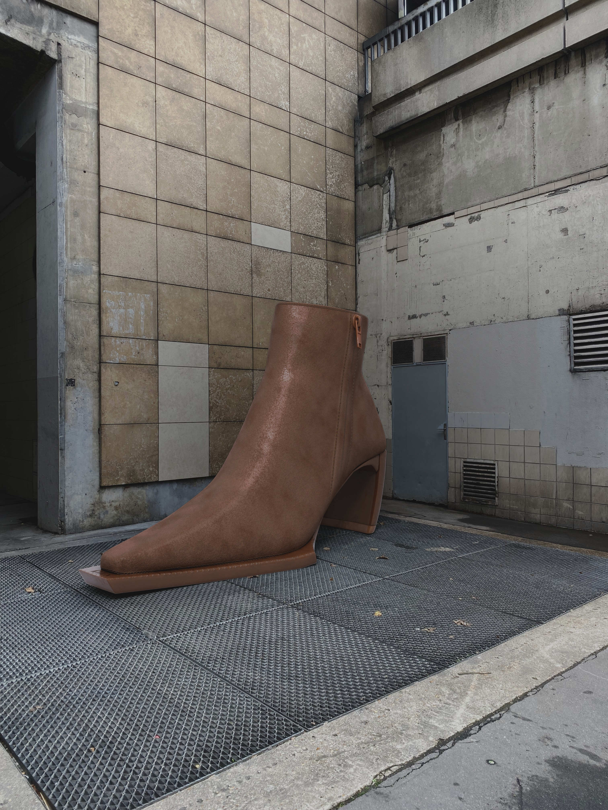
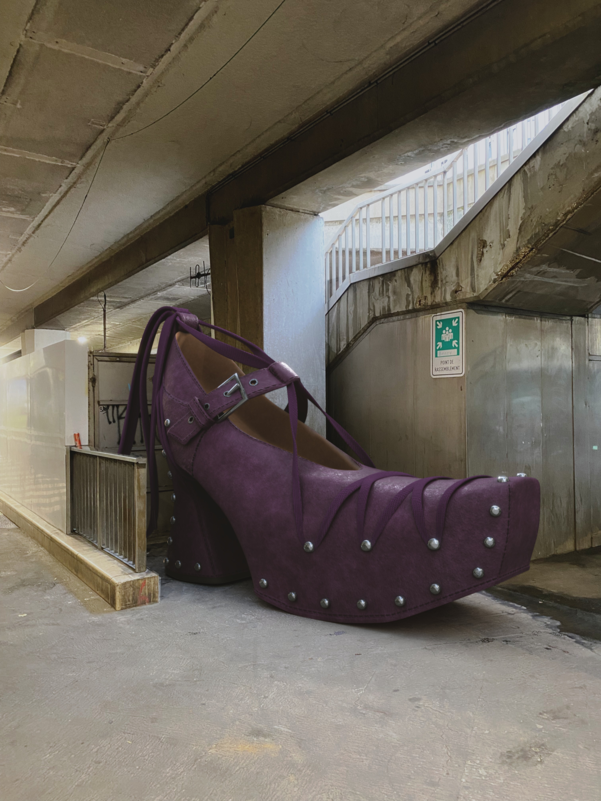
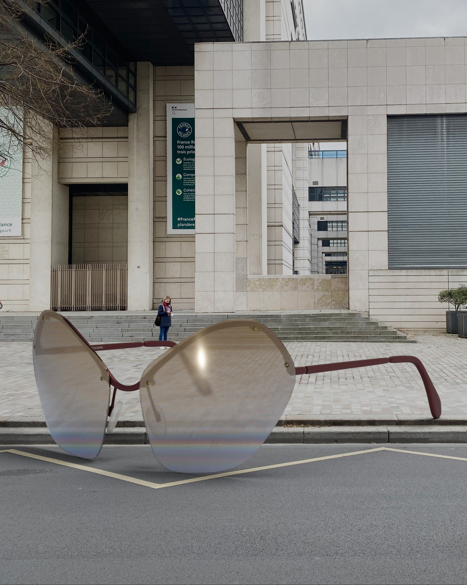
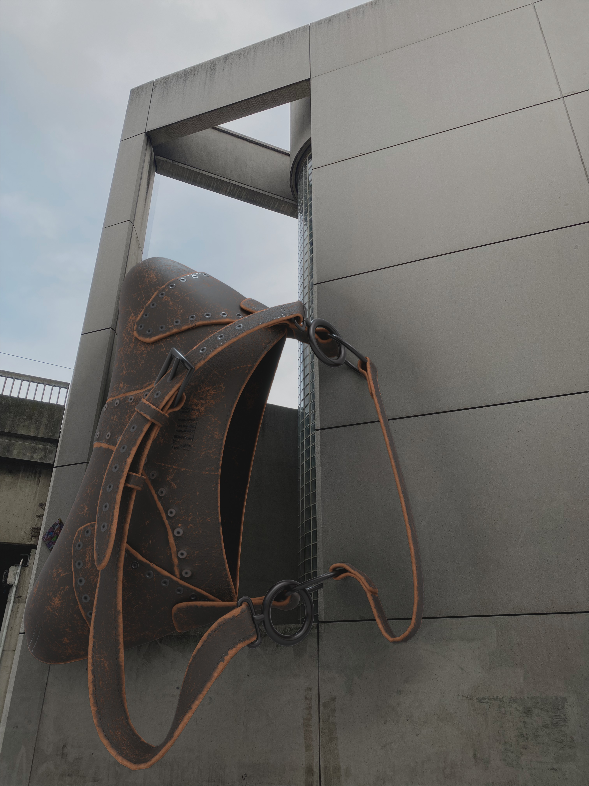
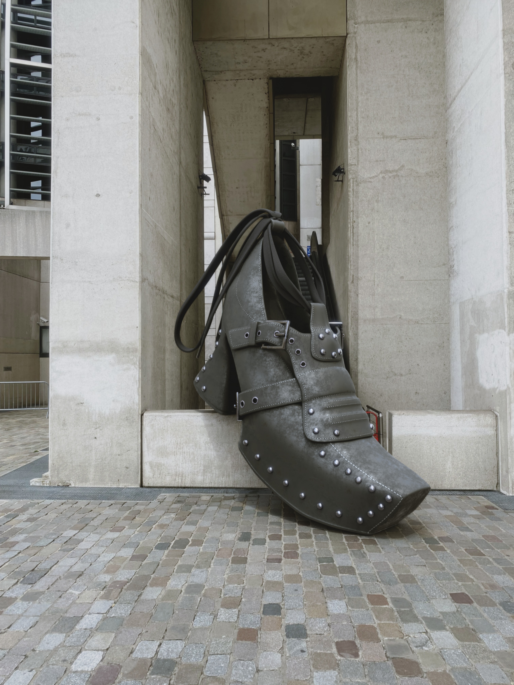
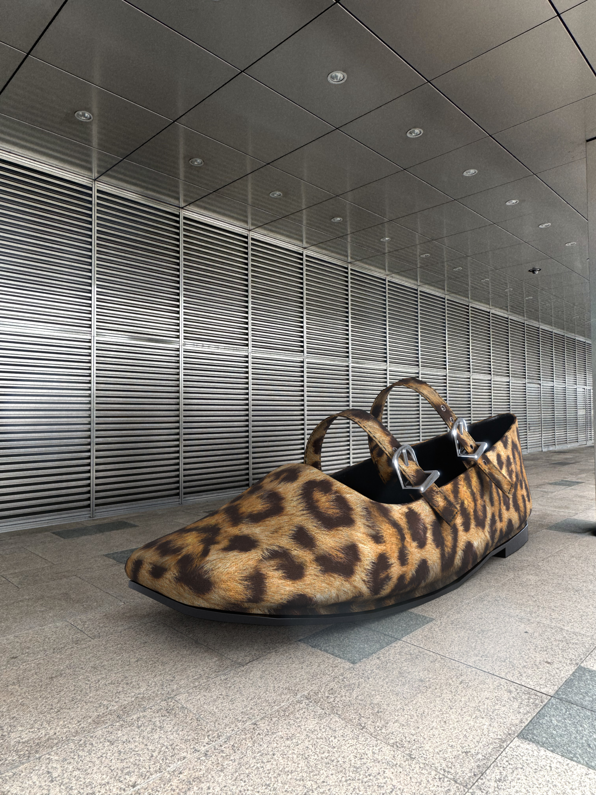

Client Brief Kundenbriefing
- 6 fashion reference objects 6 Modeobjekte als Referenz
- 6 supplied location photos 6 gelieferte Location-Fotos
- Each object should appear giant and surreal Jedes Objekt sollte riesig und surreal wirken
Freelance Project · Fiverr Freelance-Projekt · Fiverr
Oversized fashion objects modeled in 3D and composited into location photos supplied by the client. Überdimensionierte Modeobjekte, die in 3D modelliert und in vom Klienten gelieferte Location-Fotos eingefügt wurden.






